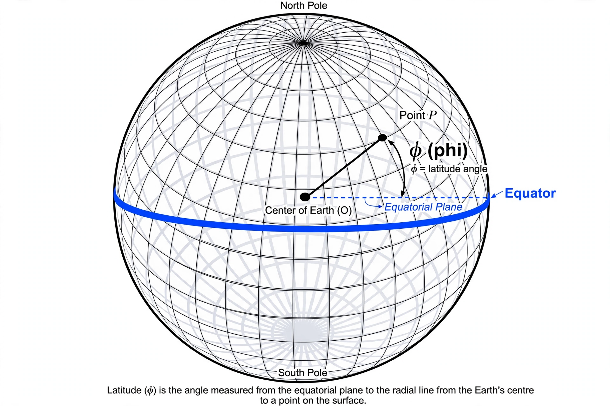

Wikipedia — the free encyclopedia

| Coordinate system | Geographic coordinates |
| Range | 0° at the Equator to ±90° at the poles |
| Reference line | Equator |
| Lines of equal latitude | Parallels |
Latitude is a geographic coordinate that specifies the north–south position of a point on the Earth's surface. It is an angle, measured in degrees, minutes and seconds, ranging from 0° at the Equator to +90° at the North Pole and −90° at the South Pole. Lines joining points of equal latitude are called parallels, because they run parallel to the equator and to each other.
Together with longitude, latitude allows any location on Earth to be specified precisely, and the pair underlies all modern mapping and navigation systems, including GPS.
Several parallels have special names and climatic or astronomical significance: the Tropic of Cancer (about 23.4° N) and the Tropic of Capricorn (about 23.4° S) mark the limits of the Sun's overhead passage; the Arctic Circle (about 66.6° N) and Antarctic Circle (about 66.6° S) mark the limits of the polar day and night.
Because the intensity of sunlight varies with latitude, it is a first-order control on climate: low latitudes near the equator are generally warm year-round, while high latitudes experience strong seasons and long winter darkness. One degree of latitude corresponds to roughly 111 kilometres everywhere on Earth.